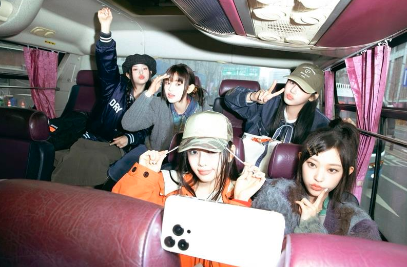

¡Miembros!
Minji: Líder del grupo, conocida por su carisma y habilidades vocales. Hanni: Tiene una voz única y es reconocida por su presencia escénica. Danielle: Posee un estilo versátil y es multilingüe, lo que le permite conectar con fans de diferentes culturas. Haerin: Con un estilo encantador, destaca por su talento vocal y su capacidad de conectar emocionalmente con el público. Hyein: La miembro más joven, pero muy talentosa y enérgica, aporta frescura al grupo.